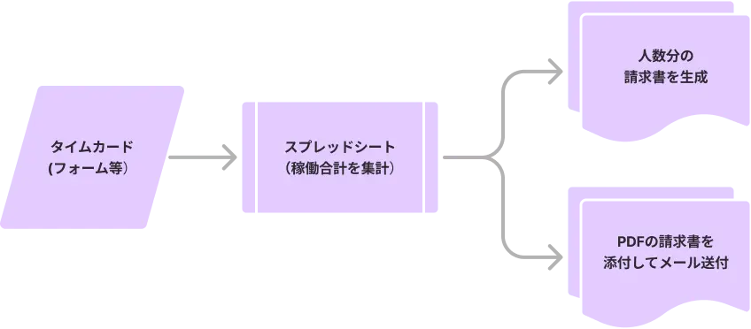

Google Apps Script（GAS）の実装
Google Apps Script（GAS）とは
Googleが提供する無料の自動化ツールで、Google Workspace（スプレッドシート、Gmail、カレンダー、ドキュメントなど）と連携して、日々の業務を効率化することができます。
活用イメージ
お時給の違うアルバイトさんそれぞれの請求書を月末に自動生成、自動送信、PDFにて所定のフォルダに自動保管
月末のお決まりの業務が、タイマーやボタンひとつで完結します

こんな方におすすめ!
- ・毎日同じ作業を繰り返している方
- ・業務を自動化したいが、専用システムやアプリの導入は難しい
- ・GoogleスプレッドシートやGmailを日常的に業務で使っている
- ・定番の業務は自動化して、コア業務に集中したい
特徴・出来ること
- ・タイマーやボタン操作で、人の手を介さずに一連の業務が完了
- ・人的ミスが無くなる
- ・Google Workspaceに留まらず、外部API（Chatwork、Slack、LINEなど）との連携も可能
- ・業務のスタイルに合わせて、何通りものカスタマイズが可能
活用例
- ・カレンダーにある複数人の予定をスプレッドシートに表でまとめる
- ・スプレッドシートで組んだバイトのシフトをGoogleカレンダーへ反映
- ・お問合せフォームの自動応答メール
- ・数百、数千もの案内メールから、実案件に結びつくメールだけをスプレッドシートに集約
- ・単価の違う外注の請求書をそれぞれ自動生成、自動メール送信、自動保管
- ・指定した日程でChatworkなど外部サービスへ定型メッセージを投稿..etc